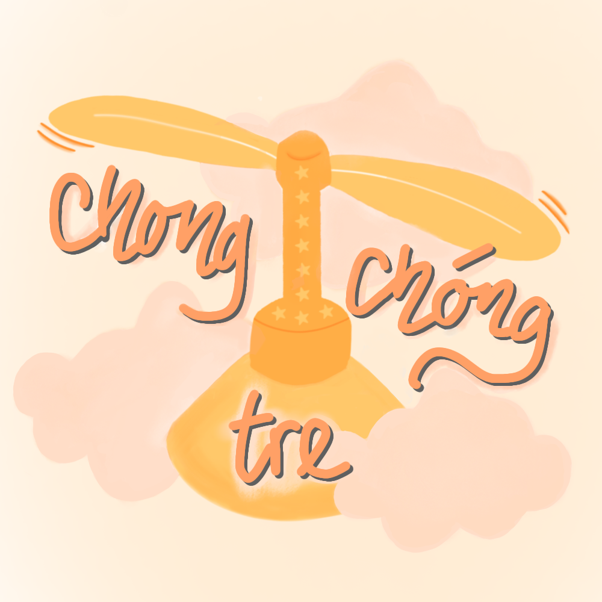

Like a bishop extending its reach across the board through diagonals, I used communication to extend Chong Chong Tre's impact — promoting its stories with more people and encouraging meaningful participation.

Chong Chong Tre is a non-profit educational initiative that provides free English education and meaningful learning experiences for underprivileged children in Ho Chi Minh City. Through weekly classes, seasonal events, and creative workshops, the project builds an inclusive community where children can learn with confidence, creativity, and joy.

Weekly classes

Creative workshops

Mid-Autumn Festival

Tet Festival
Event Volunteer
At Chong Chong Tre Project, I supported the planning and execution of community events such as Tet Festival, Summer Camp, and Mid-Autumn Festival. During major events, I led activity stations, coordinated with fellow volunteers, and helped deliver engaging experiences for children. These experiences gave me a deeper meaning to the stories I later communicated online.
Content Writer
2024 – 2025Responsibilities
- Wrote social media content to promote the project's classes and community events.
- Turned everyday activities into stories that captured attention and encouraged engagement.
What I Learned
This was where I first learned how to understand different audiences, write hooks that captured attention, and create content that matched the project's message and tone.
View My CertificateSocial Content (Planning Team)
2025 – 2026Moving beyond content creation, I joined the Planning Team as a Social Content, where I helped plan and coordinate communication campaigns across the project's social media platforms.
Responsibilities
- Brainstormed campaign ideas and developed monthly content calendars to communicate the project's educational mission, encourage community engagement, and support volunteer recruitment and event promotion.
- Assigned tasks and coordinated deadlines across writers, designers, and video editors.
- Reviewed content, provided feedback and managed content publishing across social media platforms.
Planning Team Leader (3 Monthly Rotations)
Each month, one member was selected to lead the Planning Team. During my three rotations as a leader, I was responsible for guiding both the team's strategy and execution.
Responsibilities
- Led the Planning Team in developing and executing the monthly communication plan.
- Evaluated the team's monthly performance through engagement metrics and audience feedback.
- Led monthly reflection meetings to identify challenges and propose actionable solutions.
- Cooperated with BOD to set content directions, guided brainstorming sessions, and ensured all content aligned with the project's communication goals.
Trạm Hè (Summer Camp) 2025 — Volunteer Recruitment
Challenge
How do we encourage university students to volunteer for an event from a non-profit educational project?
Beyond promoting the event itself, we needed to understand what students were looking for — from extracurricular credits to a welcoming community where they could feel valued, connected, and make a meaningful impact.Strategy
Rather than relying on recruitment posts alone, we built the campaign around the volunteer experience.
Recruitment Post
Introduced the event and its activities.
Why Trạm Hè?
Highlighted the friendships, memories, and personal growth volunteers could gain.
Volunteer Stories
Shared authentic stories from previous volunteers to build trust and encourage applications.
Outcome
Reached 5,000+ people and successfully recruited 30 volunteers for Chong Chong Tre's Summer Camp 2025.
10,000+
People reached
1,000+
Facebook followers gained
50+
Volunteers recruited
Communications: I learned how to find inspiration beyond social media trends, understand what different audiences cared about, and transform those insights into content ideas that communicated the project's message. More importantly, this experience taught me to think beyond individual posts — planning content that worked together as one consistent campaign with a clear purpose.
Leadership: I realised that leading a team meant more than coordinating tasks. It required continuously learning, bringing fresh ideas to the team, refining our workflows, and creating an environment where everyone could keep growing. I also learned to approach every challenge with reflection and concrete action — not simply identifying problems, but turning them into practical solutions that could be implemented and improved over time.
Click each piece to discover its story.